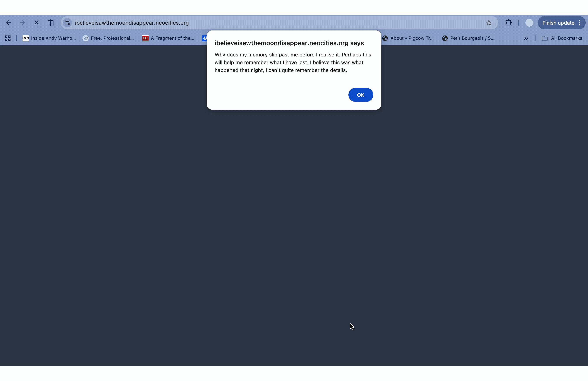

Dear... is a browser-based, computational-poetic, interactive fiction work that explores the conditions of desired connection between individuals. It navigates through a series of moments full of yearning, longing, avoidance, tenderness and aversion, exploring the unstable emotional states that emerges between implied connection.
The narrative traces the formation, weakening and drift of an unspoken relationship. Taking the form of an a letter with an indirect addressee, the work takes advantage of native HTML form elements as an emotional architectural feature, where the act of reaching is deferred, fragmented and systematically withheld. HTML is approached as a language that contains everything and delivers only what the system permits.
The work sits within a broader inquiry into how digital systems quietly structure the terms of emotional experience. It asks what can be expressed, what gets routed away, and what remains undeliverable inside infrastructure where feeling is secondary.
Visit the work here
